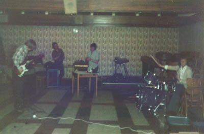
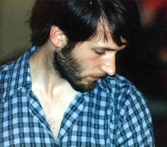

Chapter 13. Stag (the first studio sessions)
Our long time friend, colleague soundman and photographer Andy Parkinson, had moved down to London as a cameraman for LWT (London Weekend Television). Subsequently he had met up with TV mogul and music man, Mike Mansfield who was most known at the time for his TV music programmes like Supersonic, and his catchphrase 'Cue... T.Rex,' or whoever it was at the time. His long blonde hair, white suits and pointing to the act whilst saying his catch phrase summed up a generation of music lovers. Andy went to work for him, and promised to bring him down to see the show. I being a sceptic was not expecting it to happen, as Andy had a happy knack of not always being able to follow up his promises with real actions.
So the last night of the show dawned, I of course came on last being the Musical Director. I carefully surveyed the hall looking for the trademark Mike Mansfield flashy white outfit, and did not see one. So putting it down to a load of rubbish shrugged my shoulders and played the opening glissando of 'Come' to start the whole show off. It was only after the show finished that we walked into the bar to find Andy and Mike Mansfield waiting for us! They had had a puncture in Mike's White Rolls Royce (yes, that is what I said!), and arrived five minutes late!
Mike's first response was to praise the show heartily and ask us if we had a recording of it all, which of course we hadn't. So he immediately ordered Andy to get us into a studio for two weekends to get some of the most immediate songs recorded. Talk about panic! I was so worked up I could hardly sleep. Mike gave us a writers contract for Stag and paid for us to go into Pennine Studios in Oldham (now sadly gone). The plan would be for the band to spend the first weekend laying down a number of backing tracks, in the second weekend the singers, (including all the chorus as well) would do their tracks.
It was booked as an 8-track session and we ended up doing Music Box, Sally (50's), The Very First, The Tall Tree, The Castle, Baphomet, Dial 666, Mama I Think I'm Going Crazy, Happy Ever After, Fires in Your Cities and Stag.
The Music Box is the main theme from the show, it takes the tune from the Tall Tree and is referenced several times when Sally receives a music box as a present, which plays Herne's tune. Recording? Very simple, it was me on the piano and Colin on the Glockenspiel.

Sally (50's) is a deliberately naïve 'Buddy Holly' type arrangement with backing vocals in the style of that time. Another fairly simple one to record and it was identical to the live version.
For the Very First we began to differ from the live version. The studio version begins with a heavily echoed drum kit that was absent before hand.
The Tall Tree is one of the longest songs in the show at over 8 minutes, although completely acoustic in arrangement we took the opportunity in the studio to double up my guitar part. At a dramatic point in the song Alison's vocal is put through an ADT (Automatic Double Tracking). By slightly detuning the second part this has the effect of highly charging the end result.
The Castle had the largest arrangement for the choir and proved difficult to get down on tape. After the first take we noticed that Mike Cheesman had one small note wrong, the studio engineer informed us that he could overdub it... but only once. If it had to be done a second time we would lose some of the previously recorded material. This put incredible pressure on Mike, but he rose to the occasion and nailed it on the first take. The overdub is the very last sentence of the song where Mike sings aah's solo before the choir starts to add their part.
 Baphomet was quite different. We used the Yamaha's glissando strip for the recording which slides a note either up an octave or down as far as audibly possible. This adds a great deal of character and atmosphere to the piece.
When we got to Dial 666 the saxophonist Alan Barnes, being new to a studio was understandably nervous and not at his usual best. So we again used the ADT but this time to beef up his sound. The end result is very solid.
Mama I Think I'm Going Crazy sounds quite different. On stage I had used the piano but we decided it didn't have enough power. Also Chris Fogg said it should be played on the Clavinet and be more staccato (i.e. jumpy). Believe it or not this was also ADT'ed and at times it sounds like a horn section; it's not it's the keyboard! This song is also well remembered for featuring the f word, the shock appearance of which jars the listener. The recorded version has a bigger finish with more 'wallop'!
Happy Ever After started life as a straight folk song with medieval lyrics, albeit one with a number of time signature changes. We had an idea to do something radically different with this one in the studio. At the time there was a very popular folk / rock group called Steeleye Span who would add off beat electric lead and bass parts to an ostensibly simple folk tune. We decided to approach Happy Ever After the same way, after all the time signature changes took us in that direction. Mike and Geoff rose to the occasion and produced sublime bass and guitar parts respectively. The effect was very different and gave this tune a modern slant. Incidentally there is a mistake in the recording where the Saxophone and Recorders apparently play unaided behind one of the verses. My 12-string guitar part was accidentally missed off and the effect was so good we decided to keep it that way. Art By Accident can be very effective!
Fires In Your Cities was by and large unchanged; the arrangement stayed the same since it's inception.
As for the title song Stag changed in one memorable place, near the end of the song the final verse did not slow down. When we came to record the band parts we decided it would be more dramatic to slow down and pause before the final chorus. This enhanced the memorable line "I hear the future calling... the past is history" giving it a spine tingling quality. However this left a gap in free-time which Alison would have to sing over a week later and somehow come in at exactly the right time. Believe it or not she did on the very first take! The song ends with the sound of a door being slammed, to symbolise Sally's descent into madness and the cell door of her Asylum closing. Years later Chris Fogg informed me that the studio technicians had gone over the road to the local Police station and created an authentic recording of one of their cell doors slamming.
Suffice it to say that these events will stay in my memory forever as some of life's most exciting and meaningful moments. But as luck would have it we had not finished yet in the studio...